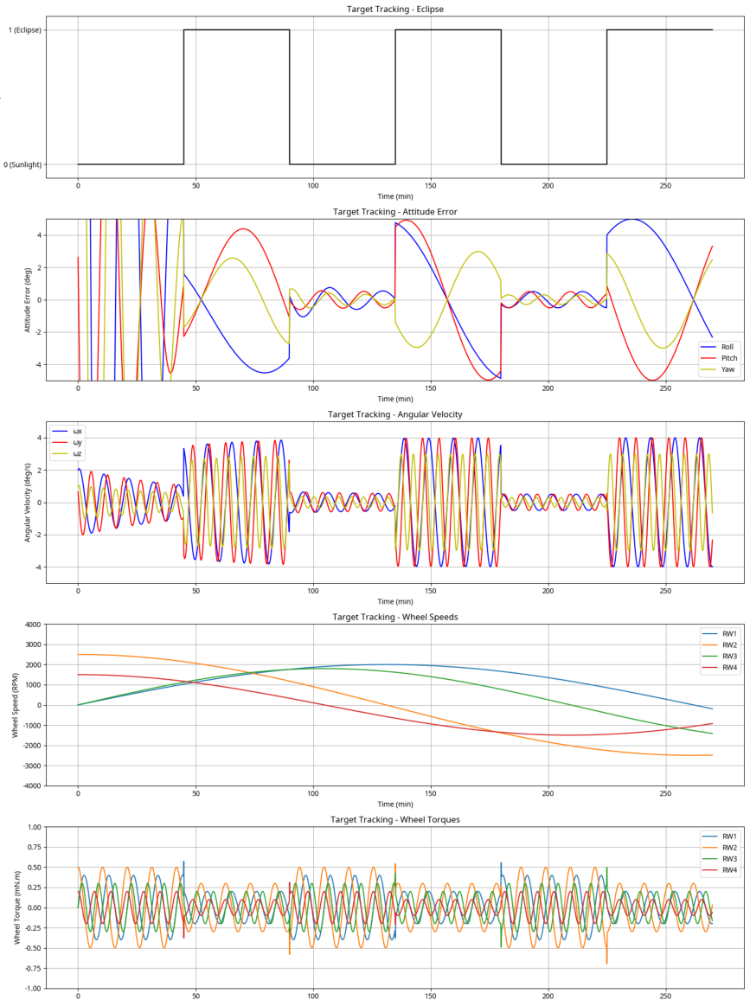

Overview
The thesis develops an attitude control system for NPUSat, a hypothetical CubeSat intended for Earth observation. The controller supports nadir-pointing and ground-target-tracking modes, with numerical assessment of the response to environmental disturbances.
Methodology
A nonlinear model predictive control (MPC) scheme was implemented in Python using NumPy, SciPy, and do-mpc. The simulation uses SGP4 for orbital propagation and pyIGRF for geomagnetic field modeling. Four reaction wheels in a tetrahedral arrangement provide redundancy for a simulated actuator-failure contingency.
Simulation findings
The thesis reports nadir-pointing and sunlit target-tracking errors below 1° under its simulated conditions. Contingency simulations investigate control after one reaction wheel becomes unavailable.
Scope
This is a computational bachelor thesis based on a hypothetical mission, rather than a hardware qualification or flight demonstration.